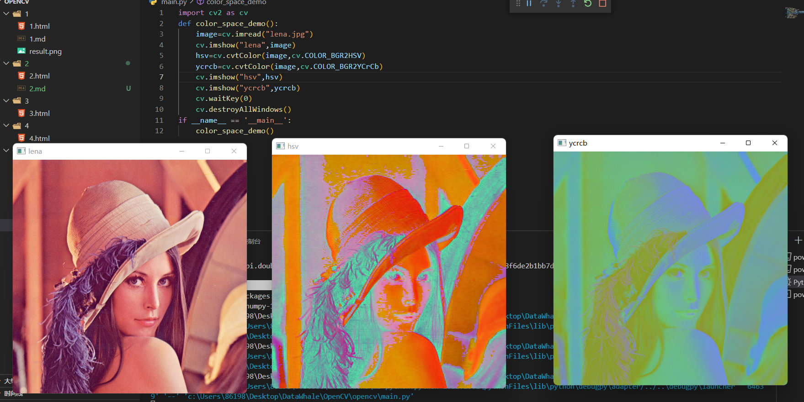
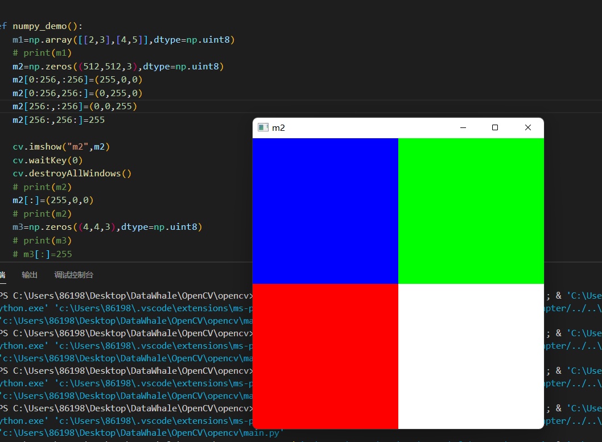

RGB色彩空间,设备独立
HSV色彩空间,对计算机友好,区分各种色彩
YCrCb,Y分量表示信息,CrCb可以被压缩
RGB是计算机显示器的标准支持色彩系统
RGB的取值范围0~255
HSV取值范围H:0180,SV:0255
代码演示色彩空间转换为hsv与ycrcb

opencv-python中一切图像都是numpy array,创建图像就是创建numpy array

像素实际大小:dpi x inches = 像素总数
术语dpi:每英寸的点数目,96dpi – 针对打印
术语ppi: 每英寸的像素数目 – 针对图像分辨率
像素遍历本质就是numpy数组访问
假设变量image
获取图像维度信息: image.shape
图像访问像素: image[row, col]
图像赋值像素: image[row, col] = (b,g,r)
前提:两个图片进行图像算术操作,二者的图像大小必须一致
cv.add(src1, src2[, dst[, mask[, dtype]]]) ->dst 加法
cv.subtract(src1,src2[,dst[,mask[,dtype]]])->dst 减法
cv.multiply(src1,src2[,dst[,scale[,dtype]]])->dst 乘法
cv.divide(src1, src2[, dst[, scale[, dtype]]])->dst 除法
参数说明
src1 & src2表示图像
加法，保证不越界：saturate(src1 + src2)-》0~255 (如果超过255,则会设定为255,低于0，则会设置为0)
观察发现，在加法跟减法的函数里会有mask参数，mask参数就是一个矩阵，只要有值(值为1)的区域才会进行加减法，而其他地方全为0，算术结果与mask为0的地方一致，mask为1的地方进行算术操作